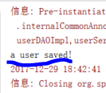

本文主要介绍使用IOC注解方式，达到和上一章中xml配置相同的效果。
第十六课. Annotation-Resource-Component
之前我们都是在xml中对Spring进行配置，这一课开始，我们进入注解之旅。
参考文档，有这么一段：
也就是说，如果我们想要用Annotation，就必须在beans.xml中加入这些配置。
上面的xmlns就是xml namespace的缩写，也就是一个命名空间
xsd里面装着我们能写的名字，也就是命名空间的具体内容。
我们重新修改我们的beans.xml：
来讲解一下这个xml：
首先<?xml version="1.0" encoding="UTF-8"?>
是xml文件标准的开头
然后下一句
没有任何前缀的bean，它们的schemaLocation是从哪里找，就是
http://www.springframework.org/schema/beans/spring-beans-2.5.xsd
这个文件里面有配置。所以，所有的<bean，都是从上面那个xsd里面读出来的。
下一句：
表明以xsi开头的，都要从http://www.w3.org/2001/XMLSchema-instance 具体的schemaLocation里面去找。
而
这一句，表明以context开头的schemaLocation，其具体的对应xsd，就是
http://www.springframework.org/schema/context/spring-context-2.5.xsd
从上面我们可以看出来，xsd里面定义的，就是xml具体的语法。所以把xsd文件称作元数据文件。最早确定xml元数据的，是dtd文件。
配置好上面的文件，我们就可以利用注解来重写我们的程序了。
修改UserService.java中对UserDAO的setter：
编写测试用例：
注意：上面的代码必须在java6上运行（在java8不兼容，报错了，所以还是要去学习最新的spring技术）
运行：
重新修改beans.xml，这次定义两个UserDAOImpl：
运行：
发现报错了。其实还是上面的问题，就是这个@Autowired ,它默认是autowire=”byType”，所以为了避免这个问题，我们可以继续加注解：
运行：
成功。
第十七课. Annotation-Resource-Component
@Resource（重要）
- 加入：j2ee/common-annotations.jar
- 默认按名称，名称找不到，按类型
- 可以指定特定名称
- 推荐使用
- 不足：如果没有源码，就无法运用annotation，只能使用xml
代码：
下面我们演示@Component
修改bean.xml，将UserDAO的bean都删除，然后配置component：
这样就会去com.bjsxt下面的包去扫描对应的组件。
将UserService中的@Resource中的name去掉：
为UserDAOImpl加上注解：
运行：

成功将一个DAO注入到Service中被注入的DAO默认生成名字userDAOImpl
如果我们想自己为DAO手动设置名字，怎么做？
修改DAO：
修改Service：
这样就将名字为u的DAO注入到Service中：
OK~
上面我们已经将xml中的DAO的bean替换成了注解形式的了，如果我们还想把Service也替换掉，怎么做？
很简单，修改UserService代码：
|
|
删掉xml中Service的bean，运行：
成功！
再详细溜一下上面代码的过程：
首先先加载
即读beans.xml里面的内容，然后通过
找从com.bjsxt开始“scan”含@component的类，
找到之后就初始化对象，结果在
|
|
其一个属性的set方法上找到一个源为“u”的一个bean，于是就加载那个bean！
这样看起来，注解比xml方式方便的多！但是，xml没用了吗？非也！当我们交付程序以后，源码就不能和看到了，所以我们不能在源码上加注解，这时候就需要在xml中进行配置。
@Component @Service @Controller @Repository（四个一样的功能！！）
- 初始化的名字默认为类名首字母小写
- 可以指定初始化bean的名字
第十八课. Annotation-修正-Pre-Post-Scope
之前我们在xml中使用过scope，如果我们想在注解中使用，只需要在需要的类前加上@Scope注解，并标明是singleton还是prototype
另外，我们为了达到之前的init和destroy效果，就是规定一个bean的生命周期，可以加注解@PostConstruct和@PreDestroy：
这样就不需要在bean中标明了。
运行：
OK。